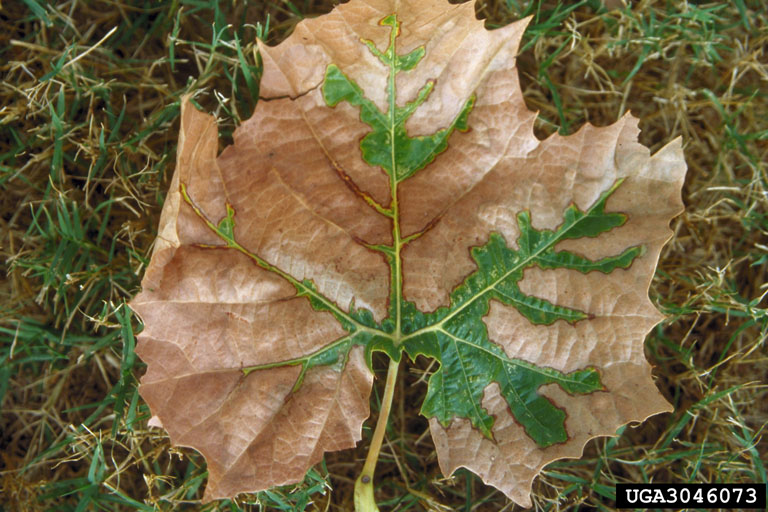

Xylella Fastidiosa
Did you know that...
Xylella fastidiosa is a pathogenic bacterium that infects plants, causing a variety of diseases in over 100 plant species, including grapevine, citrus, almonds, coffee, and many other species of economic importance. Among the diseases it causes are Pierce's Disease in grapevine, Citrus Variegated Chlorosis (CVC) in oranges, and leaf scorch diseases in almond, coffee, and oleander. It was first discovered associated with Pierce's Disease in southern California grapevines in 1973, and first grown in culture in 1978. It was then identified as the agent that causes CVC in 1993, a disease first discovered in Brazil in 1987. X. fastidiosa exclusively colonizes the xylem, the water-conducting systems of plants, forming biofilms, and is transmitted from plant to plant by xylem-feeding leafhopper insects, including the glassy-winged sharpshooter. It poses a serious agricultural and economic threat, as it is responsible for major crop losses globally, and is included in the federal government's Agricultural Select Agent list. Because of its public importance as an agricultural threat, genomic studies of different host plant strains have been underway in an attempt to gain insight into virulence factors, and consequently the development of microbiological control and disease management strategies.
Xylella fastidiosa is a Gram-negative, rod-shaped bacterium with dimensions of 0.25 to 0.35 µm in radius and 0.9 to 3.5 µm in length. It has distinctive rippled cell walls, and possesses two types of polar pili: type I pili 0.4 to 1.0 µm in length, and type IV pili 1 to 6 µm in length. Both types of pili are positioned at the same pole and aid in xylem attachment, biofilm formation, and twitching motility. X. fastidiosa is a nutritionally fastidious aerobe that grows in the highly specialized environment of the xylem fluid, which contains the lowest concentration of organic energy sources of all plant tissues. However, this nutritionally poor environment does contain specific amino acids, particularly glutamine and asparagine, organic acids, and inorganic ions that are essential nutrient sources for the bacterium, allowing it to efficiently produce energy and grow. Because of its nutrient-poor environment, it has special mechanisms to concentrate and absorb nutrients. It is believed that it possess extracellular polysaccharide glycocayx-like fibers that may function in ion-exchange, nutrient binding within cell aggregations, and conserving and concentrating digestive enzymes released by the bacterium.
Additional Information
Variety of plant scorch diseases
Pierce's Disease
Xylella fastidiosa causes a variety of plant scorch diseases, most notably Pierce's Disease in grapevines and Citrus Variegated Chlorosis (CVC) in citrus. While there are a number of proposed mechanisms for its pathogenesis, Xylella fastidiosa is thought to cause disease by blocking xylem vessels and water transport, causing water stress and nutritional deficiencies that result in disease symptoms and expression. Bacterial pili, exopolysaccharides, degradative enzymes, biofilm formation and cell aggregation, and systematic movement from vessel to vessel all play important factors in pathogen virulence. Polar pili and the secretion of exopolysaccharides mediate plant-bacterium, and bacterium-bacterium adhesion and aggregation, allowing for the formation of cell aggregates which can then cause xylem blockage.
Back